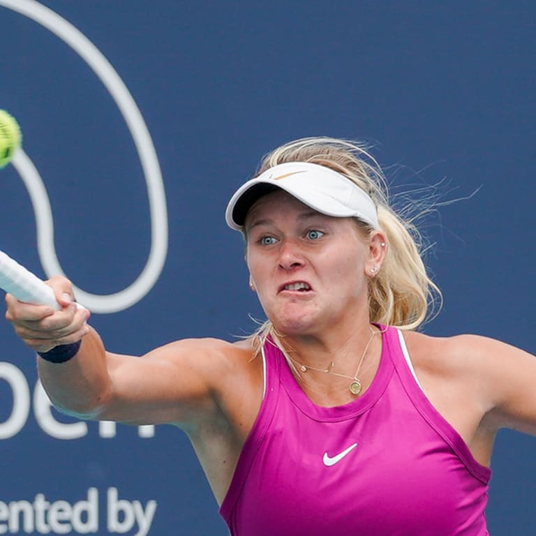

WTA player for 5/19 to 5/26/24: Peyton Stearns

Peyton Stearns had to survive a couple marathon matches to make this week's Grand Prix Son Altesse Royale La Princesse Lalla Meryem final, but it was a very different story on Saturday, where she eased to her first WTA singles title.
The 22-year-old American Stearns, ranked World No.81, defeated 66th-ranked Mayar Sherif of Egypt 6-2, 6-1 in 1 hour and 12 minutes to capture her maiden trophy on tour. Stearns is a former collegiante star who played for the uviersity of Texas.
Stearns battled through two narrow victories in the past two days to squeak into Saturday's championship match -- her second tour-level final after a runner-up showing at 2023 Bogota.
In the quarterfinals, 2022 NCAA champion Stearns trailed defending champion Lucia Bronzetti 5-0 in the third set, but the American reeled off the next seven games to make a 6-4, 4-6, 7-5 escape, saving two match points in the process.
Then in the semifinals, Stearns had to grind through a 3-hour and 15-minute clash with Viktoriya Tomova, eventually prevailing 6-7(6), 7-5, 7-6(4). That was one of the 15 longest matches of the year on the Hologic WTA Tour.
By contrast, Sherif had rolled into Saturday's showpiece match. Sherif, a Hologic WTA Tour titlist at 2022 Parma, had not lost more than six games in any of her four wins en route to her third career final.
But it was a reversal of fortunes on Saturday, with Stearns successfully shaking off any potential fatigue from the week. The American took control from the start, winning the opening set without facing a break point.
Sherif garnered four break points in the second set, but Stearns stayed resolute and was never broken. Serving for the match, Stearns stared down two break points at 15-40, but she came back from that deficit and closed out the win at the first time of asking.